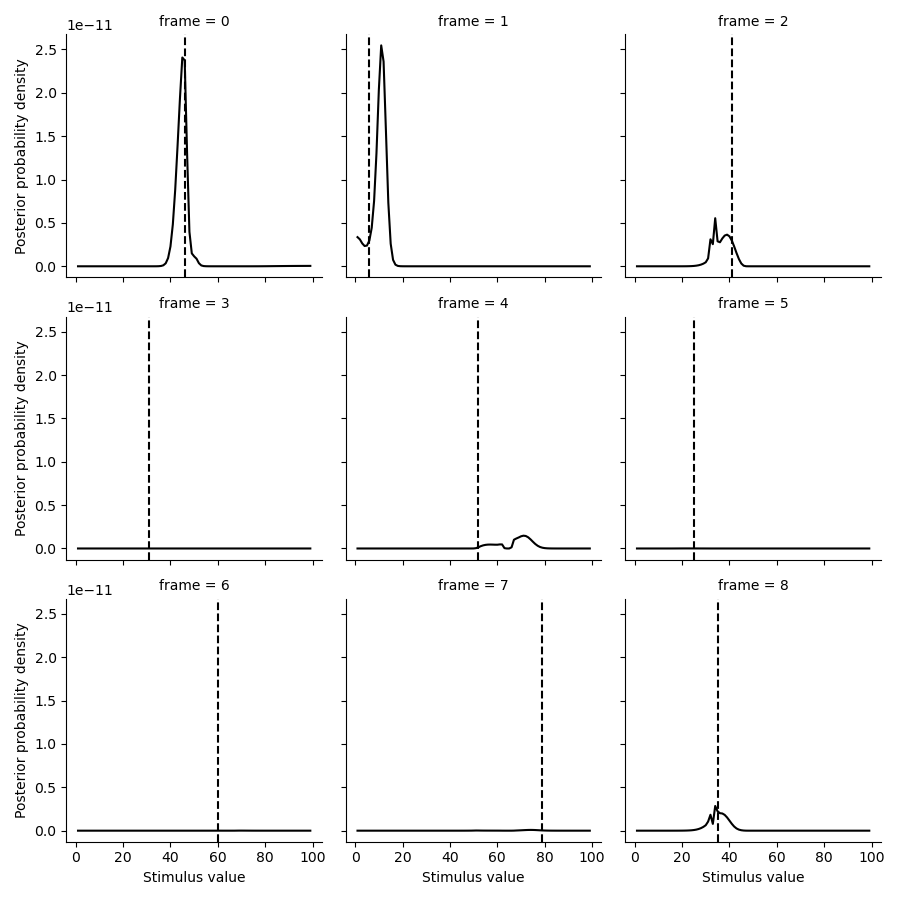
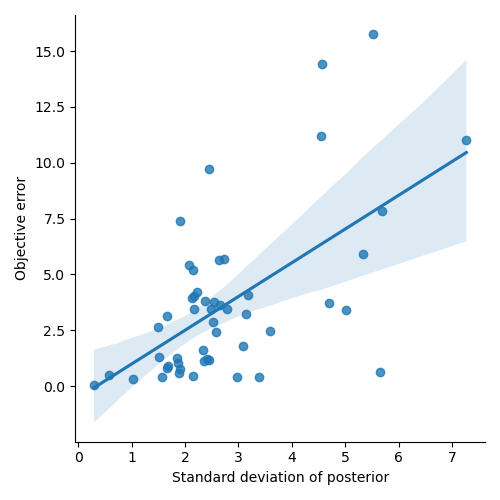
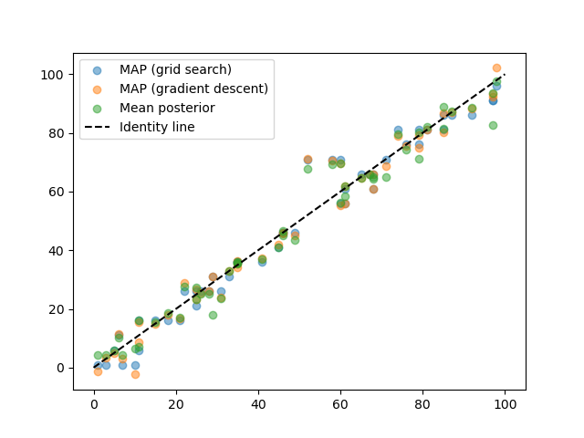

Lesson 5: Decoding noisy neural data#
In this lesson, we will see a more elaborate example of how we can decode stimulus features from neural data and check how well it worked.
Simulate data#
First we simulate data from a GaussianPRF with 20 PRFs
a 50 time points. The parameters are randomly generated
within a plausible range.
from braincoder.models import GaussianPRF
import numpy as np
import pandas as pd
import scipy.stats as ss
# Set up 100 random of PRF parameters
n = 20
n_trials = 50
noise = 1.
mu = np.random.rand(n) * 100
sd = np.random.rand(n) * 45 + 5
amplitude = np.random.rand(n) * 5
baseline = np.random.rand(n) * 2 - 1
parameters = pd.DataFrame({'mu':mu, 'sd':sd, 'amplitude':amplitude, 'baseline':baseline})
# We have a paradigm of random numbers between 0 and 100
paradigm = np.ceil(np.random.rand(n_trials) * 100)
model = GaussianPRF(parameters=parameters)
data = model.simulate(paradigm=paradigm, noise=noise)
Estimate parameters of encoding model \(\theta\)#
Now we can use ParameterFitter to estimate back the parameters.
We also print out the average correlation between the true and estimated
parameters, for each parameter seperately.
# Now we fit back the PRF parameters
from braincoder.optimize import ParameterFitter, ResidualFitter
fitter = ParameterFitter(model, data, paradigm)
mu_grid = np.arange(0, 100, 5)
sd_grid = np.arange(5, 50, 5)
grid_pars = fitter.fit_grid(mu_grid, sd_grid, [1.0], [0.0], use_correlation_cost=True, progressbar=False)
grid_pars = fitter.refine_baseline_and_amplitude(grid_pars)
for par in ['mu', 'sd', 'amplitude', 'baseline']:
print(f'Correlation grid-fitted parameter and ground truth for *{par}*: {ss.pearsonr(grid_pars[par], parameters[par])[0]:0.2f}')
gd_pars = fitter.fit(init_pars=grid_pars, progressbar=False)
for par in ['mu', 'sd', 'amplitude', 'baseline']:
print(f'Correlation gradient descent-fitted parameter and ground truth for *{par}*: {ss.pearsonr(grid_pars[par], parameters[par])[0]:0.2f}')
Working with chunk size of 666666
Using correlation cost!
0%| | 0/1 [00:00<?, ?it/s]
100%|██████████| 1/1 [00:00<00:00, 8.90it/s]
100%|██████████| 1/1 [00:00<00:00, 8.85it/s]
Correlation grid-fitted parameter and ground truth for *mu*: 0.96
Correlation grid-fitted parameter and ground truth for *sd*: 0.67
Correlation grid-fitted parameter and ground truth for *amplitude*: 0.90
Correlation grid-fitted parameter and ground truth for *baseline*: 0.72
Number of problematic voxels (mask): 0
Number of voxels remaining (mask): 20
Correlation gradient descent-fitted parameter and ground truth for *mu*: 0.96
Correlation gradient descent-fitted parameter and ground truth for *sd*: 0.67
Correlation gradient descent-fitted parameter and ground truth for *amplitude*: 0.90
Correlation gradient descent-fitted parameter and ground truth for *baseline*: 0.72
Note how some parameters (e.g., mu and amplitude) are easier
to recover than others (e.g., sd).
Estimate the covariance matrix \(\Sigma\)#
To convert the encoding model into a likelihood model, we need to add a noise model. More specifically, a Gaussian noise model. This requires us to estimate the covariance matrix \(\Sigma\) of the noise.
Note how we use init_pseudoWWT and a plausible stimulus_range
to approximate the WWT matrix.
stimulus_range = np.arange(1, 100).astype(np.float32)
model.init_pseudoWWT(stimulus_range=stimulus_range, parameters=gd_pars)
resid_fitter = ResidualFitter(model, data, paradigm, gd_pars)
omega, dof = resid_fitter.fit(progressbar=False)
Decode stimuli#
Simulate “unseen” data#
Now we have estimated the encoding model and the noise model, we can use them to decode the stimuli from the neural data. For that, we simulate a new set of neural data and decode the stimuli from.
test_paradigm = np.ceil(np.random.rand(n_trials) * 100)
test_data = model.simulate(paradigm=test_paradigm, noise=noise)
Calculate likelihood density for a range of stimuli#
We use model.get_stimulus_pdf to get the likelihood
for a plausible range of stimuli.
posterior = model.get_stimulus_pdf(test_data, stimulus_range, model.parameters, omega=omega, dof=dof)
Plot posterior distributions#
Here, we plot some of the posterior distributions for the stimuli.
import matplotlib.pyplot as plt
import seaborn as sns
tmp = posterior.set_index(pd.Series(test_paradigm, name='ground truth'), append=True).loc[:8].stack().to_frame('p')
g = sns.FacetGrid(tmp.reset_index(), col='frame', col_wrap=3)
g.map(plt.plot, 'stimulus', 'p', color='k')
def test(data, **kwargs):
plt.axvline(data.mean(), c='k', ls='--', **kwargs)
g.map(test, 'ground truth')
g.set(xlabel='Stimulus value', ylabel='Posterior probability density')

Estimate the mean posterior#
We can also estimate the mean posterior. To do this we should just take the expectation of the posterior, which is an integral:
similarly, we can also calculate the expected distance of the
expected stimulus :math:E[s] to the true stimulus:
def get_posterior_stats(posterior, normalize=True):
posterior = posterior.copy()
posterior = posterior.div(np.trapz(posterior, posterior.columns,axis=1), axis=0)
# Take integral over the posterior to get to the expectation (mean posterior)
E = np.trapz(posterior*posterior.columns.values[np.newaxis,:], posterior.columns, axis=1)
# Take the integral over the posterior to get the expectation of the distance to the
# mean posterior (i.e., standard deviation)
sd = np.trapz(np.abs(E[:, np.newaxis] - posterior.columns.astype(float).values[np.newaxis, :]) * posterior, posterior.columns, axis=1)
stats = pd.DataFrame({'E':E, 'sd':sd}, index=posterior.index)
return stats
posterior_stats = get_posterior_stats(posterior)
Once we have these two summary statistics of the posterior, we can compare them to the ground truth.
First of all, how close is the MAP stimulus to the true stimulus?
plt.errorbar(test_paradigm, posterior_stats['E'],posterior_stats['sd'], fmt='o',)
plt.plot([0, 100], [0,100], c='k', ls='--')
plt.xlabel('Ground truth')
plt.ylabel('Mean posterior')
That looks pretty good!
Finally, is the standard deviation of the posterior a good estimate of the true noise level?
error = test_paradigm - posterior_stats['E']
error_abs = np.abs(error)
error_abs.name = 'error'
sns.lmplot(x='sd', y='error', data=posterior_stats.join(error_abs))
plt.xlabel('Standard deviation of posterior')
plt.ylabel('Objective error')

That looks pretty good too! The standard deviation of the posterior is actually predictive of the true noise level.
Maximum a posteriori (MAP) estimate#
Alternatively, instead of the mean of the posterior, we can also try to find the maximum a posteriori (MAP) estimate. This is the stimulus that has the highest probability of being the true stimulus, given the neural data.
The MAP estimate is the stimulus that maximizes the posterior probability:
Note that there are theoretical advantages to the mean posterior over the MAP estimate. However, when the stimulus is high-dimensional, it is often easier to find the MAP estimate.
braincoder has a StimulusFitter, that can findo MAP estimates of the stimulus for you.
Stimulus optimisation tends to be very sensitive to local minima, so we first
use a grid search to find a good starting point for the optimisation.
from braincoder.optimize import StimulusFitter
stimulus_fitter = StimulusFitter(model=model, data=test_data, omega=omega)
# We start with a very coarse grid search, so we are sure we are in the right ballpark
estimated_stimuli_grid = stimulus_fitter.fit_grid(np.arange(1, 100, 5))
Now we apply gradient descent.
estimated_stimuli_gd = stimulus_fitter.fit(init_pars=estimated_stimuli_grid, progressbar=False)
And then plot how well we did.
plt.scatter(test_paradigm, estimated_stimuli_grid, alpha=.5, label='MAP (grid search)')
plt.scatter(test_paradigm, estimated_stimuli_gd, alpha=.5, label='MAP (gradient descent)')
plt.scatter(test_paradigm, posterior_stats['E'], alpha=.5, label='Mean posterior')
plt.plot([0, 100], [0,100], c='k', ls='--', label='Identity line')
plt.legend()

Note how in this example, the MAP and mean posterior estimates are almost identical. However, the mean posterior, where we take into account uncertainty in all stimulus posterior dimensions, has theoretical advantages, in particular when the stimulus dimensionality is high (here it is only 1-dimensional).
Note
The complete Python script and its output can be found here.
Summary#
In this tutorial, we have seen how to decode stimuli from neural data in a more realistic setting.
- The concrete steps were:
Fit the parameters of the encoding model
Estimate the covariance matrix of the noise
Apply the likelihood model to get a posterior over stimuli
Use numerical integration to get the expected stimulus \(E[s]\)
Use numerical integration to get the expected distance between the real and expected stimulus (the standard deviation of the posterior)
Use grid+gradient descent optimisation to get the most likely stimulus
In the next tutorial, we will see how to do the same thing, but in a two-dimensional stimulus space!